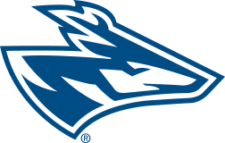

Univeristy Nebraska At Kearney
In March 1903 the Nebraska State Legislature appropriated $50,000 to build a normal school in western Nebraska. In September of that same year, after 111 ballots, the State Board of Education accepted the city of Kearney's offer of 20 acres (8.1 ha) and Green Terrace Hall at the western edge of the city to become its site. On October 18, 1904, the cornerstone of the first building was laid, while in the summer of 1905 the school offered its first classes in Kearney public facilities. The first classes on campus were held in the fall of 1905 as building was being completed. The first-year class consisted exclusively of women; Men's Hall was later established as the first hall for male students. The major sidewalks on campus were once roads, and the stoplight was located where the water fountain is now.[4] In 1921 the institution's name changed to Nebraska State Teachers College. In 1963, it became Kearney State College. Both name changes were a part of system-wide changes for the state colleges.[4] In 1989, a legislative act transferred the institution from the Nebraska State College System to the University of Nebraska system. After a Nebraska Supreme Court review, Kearney State College became the University of Nebraska at Kearney on July 1, 1991. Before its affiliation with the University of Nebraska, Kearney State had often been called "K State", an expression also often used for Kansas State University.[4] State Representative C.J. Warner of Waverly introduced the 1903 bill creating the institution; his son, State Senator Jerome Warner, introduced the bill making UNK a part of the University.[4]
